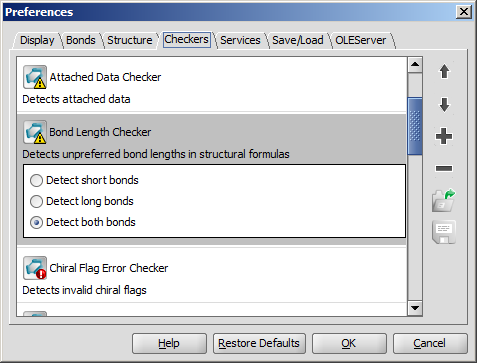
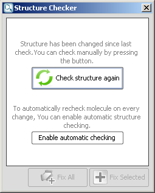

Structure Checker in MarvinSketch
Content
Introduction
Structure Checker is a tool for filtering drawing mistakes or special structural elements. Registering a compound in a company's database might limit the user in, for example, the introduction of non-natural isotopes, query bonds, species with charge, etc. The Structure Checker works with predefined checking elements and you can choose which ones should be considered when you run a check. Structure checker runs a check on the molecule(s) features and lists them in a separate window with the option to refresh when you make changes to your drawing.
Structure Checker's command line interface (structurecheck), Structure Checker GUI, and API for batch usage requires a Structure Checker license. This guide refers to the checkers available free in MarvinSketch as an add-on.
Usage
Setting Structure Checker configuration
Before you start using the Structure Checker in MarvinSketch, consult the list of available checkers in the Preferences dialog (Edit > Preferences > Checkers tab).
|  |
The default list contains checkers in alphabetical order.
Two types of checkers are listed and are distinguished by the additional 'error' tag and by different icons:
- Error detecting checkers: Error checkers are looking for chemically wrong molecule parts (e.g. valence errors, overlapping atoms);
- Feature detecting checkers: Feature checkers searches the selected molecule characteristics which in the specific structures are not considered as an error (e.g. query properties).
Click on the name of the checker to see additional options and select the
needed options by clicking the tick box.
|
Checking order
Some molecule properties might change after fixing an issue. You can define a checking sequence by moving up or down the list elements. The order of the checkers may be important in case you run a Fix All action.
To change the order of the checker items, select the checker from the list and click the up or down icon on the right side of the dialog.
Add and remove checker items
To discard items from the checking sequence, select the checker and click the button on the right.
To revert this modification or add new elements to the list, click the button on the right and select the checker needed.
Save and load checker lists
Different checking lists might be needed for different compound families. To
make checking simpler, you can save your checking list to your
computer and open it again if you are editing the same molecule type. Click the
Save button  to save your settings and click the Load button
to open a saved configuration list.
to save your settings and click the Load button
to open a saved configuration list.
Start Structure Checker
You can open Structure Checker at any stage of your work. As you
click the Check structure icon
in the toolbar, or in the Structure menu, or left-click the Checker button on the statusbar, or shortcut ctrl+r, a window will appear next to the MarvinSketch window. The molecule regions found by the Structure Checker are highlighted on the canvas with a light red color. If you click on any checker message, the effected area changes color to darker red. If you move the cursor over one of the affected region, the appropriate checker message is highlighted in the checker list.
Recheck the structure
After you have changed the structure (including accepting a fix), the checker will offer re-checking: click on the Check structure again in the Structure Checker window. 
Another option is to turn on automatic re-checking: click the Enable automatic checking at the bottom of the text. At any point you can allow the Structure Checker to fix the issues one by one or every of them by a single click.
Automatic structure checking
Turn on Automatic Check to follow every drawing step you make by a quick check. This option is switched on in the Structure menu or right-clicking the Checker button on the status bar which then becomes colored.
- In case of an error, a red exclamation mark appears . Left-clicking on this icon opens the Structure Checker window, where all the warnings are listed.
- While the molecules are scanned for checker issues, an olive question mark appears on the status bar.
- If the molecule is correct, a green check mark appears in the Checker icon on the status bar.
List of available checkers
Structure Checker GUI
structurecheck Command Line Application
Structure Checker Developer Guide